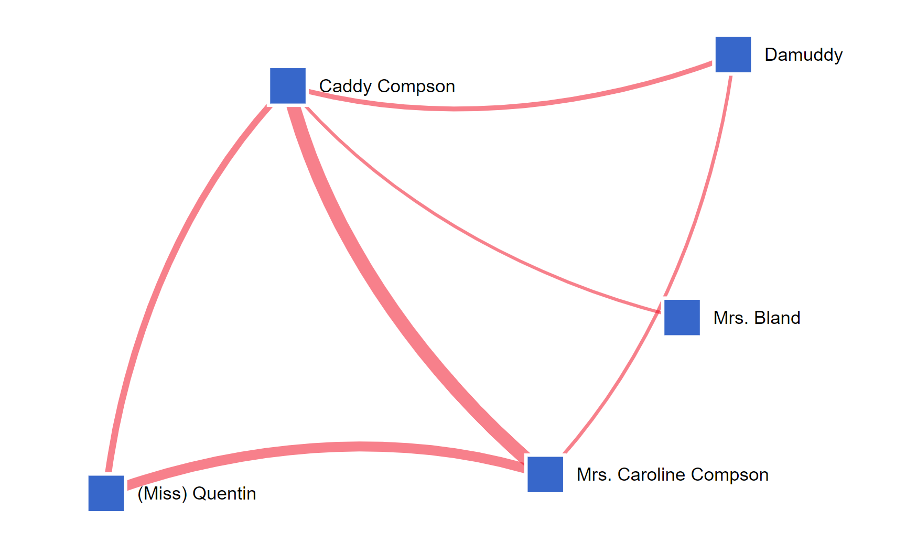

Preface
Following reading William Faulkner's, Uncle Willy, use the following tools to evaluate and answer the provided response questions to interpret the message of the text.
Teaching Tips for how to teach this lesson
Activities
1. First Activity
Give a several line explanation as to what this activity will be about and what students shoudl get from it.
Explore: Maps
The main map display shows all the locations and characters in the text. These events can be played using the toolbar at the bottom. Each location and character can be filtered down through the options on toolbar on the left side and the locations and characters can all be clicked to provide more information.
What makes the map for 'Uncle Willy' unique is the Memphis inset that shows Uncle Willy's activity there, and, in turn, how "traditional" Jefferson is closely connected to the modernity of Memphis.
- From the Digital Yoknapatawpha homepage, select “Barn Burning” from the bookshelf.
- Hover over the map icons until you find “Sharecropper’s Cabin” (
 )
) - Click on the icon
- A location record will pop up in a new window
- Read the description of the location
- Repeat these steps for “De Spain Mansion” (
 )
)
Respond: FILL IN A TITLE FOR THE QUESTIONS HERE
Use the map to answer the following questions. Be prepared to share your answers in a small group.
- consider what you are asking here. Remember that the topic is about modernization and change. How can we scaffold this so that the questions about the map go from simple to complex and then lead to thinking about modernization?
- Why would California seem appealing to a 60 year old drug addict? Why is it appealing for Uncle Willy and is there a differences?
- Following The Keely on the map, how does the fact that both Faulkner's father and grandfather were treated for alcoholism here, as well as Uncle Willy, impact how Faulkner might want us to view Uncle Willy?
- Following the Unnamed Narrator on the map,how does his unchanging age and mindset about Uncle Willy mirror some of Uncle Willy's mannerisms? Why might that be important to his characters?
- Following Mrs. Merridew on the map, from her first small interaction, a glass of lemonade to the idea of rebirth, why is Mrs. Merridew not stopped in her attempts to "save" Uncle Willy?
2. Second Activity
Explore: About the Text
The about the text tool uses outside research to help further push the understanding of the narrative as well as Faulkner's purpose in writing the narrative.
- Navigate to the Digital Yoknapatawpha home page
- Select “Lion” from the bookshelf
- This will open the main map display for “Lion”
- After selecting Uncle Willy, the page will appear with the map, display control panel, title with the contributing authors, timeline, and page correlation.
- Hover your cursor over the characters on the map to reveal their name
- Select the title with the contributing author in the left bottom corner, and the about the text should appear.
- How does Faulkner's own desperate need for money despite being successful connect to the themes narrative?
- How is Faulkner an addict in that image? How is addiction different from living? Is trying to get uncle willy clean doing more harm than good after 40 years of dependence?
- How is the importance of Uncle Willy’s drug story in The Town (1957), allowing readers to reinstate the significance of Uncle Willy's presence in keeping his community together in this narrative?
Using the About the Text section, go through the ‘About Text’ tab in person after reading the story, either do a class discussion or a written response to the questions.
3. Third Activity
Explore: Learning to use the Character-Graph
In Class activity, use the graph to expand on the differences between the main characters and how those differences help further the plot.
-
From the DY Main Menu, choose
- Visualizations
- Character-Character
- Select Uncle Willy
- Once you have opened the Digital Yoknapatawpha website, use the bottom text bar and select Uncle Willy.
- Follow the display control panel on the left of the map and select the Location Character Graph at the bottom.
- Select different search parameters to explore how the character tie together.
Characters who appear close together in one graph may appear far apart in another. The graph is interactive, so you can click on a character’s name to see their connections. You can also click and drag characters to reposition them.
Respond: Character Networks
-
We can get a better picture of Uncle Willy’s relationships by mapping with whom he spends the most time.
The Character-Character Force Directed graph shows which characters interact and how often. A red line () between two blue boxes () shows at least one interaction, and a thicker line indicates multiple interactions.
- Set Text to Uncle Willy
- Set Race to White
- Set Gender to Female
- Set Class to Upper Class
- Click “Search”
-
What do you see in the graph below?
-

-
Reminder: The thickness of the lines indicates how often these characters are together.
-
-
Let’s try that again for just women.
- Set Race to blank
- Set Class to blank
- Click “Search”
-
Let’s look at the novel in its entirety.
- Click “Clear”
- Set Text as Uncle Willy
- Click “Search”
Tip: Characters with more connections tend to be closer to the center. You can zoom in and out with the and buttons.
- Play around with this function for a few minutes using search parameters of your choice.
-
Consider the following questions:
- How does the differences of class affect the characters efforts to change the narrative/ or change the town?
- Does the ratio of major men to women characters in this narrative hold any significance in how Faulkner chooses to push the plot?
- What does Uncle Willy's connection with the townsfolk tell us about the plot?
Final Product
- How does change within the community affect the town?
- Why is it important Uncle Willy has the Unnamed Narrator to follow him?
- How has technology developments impacted the outcome of the story?